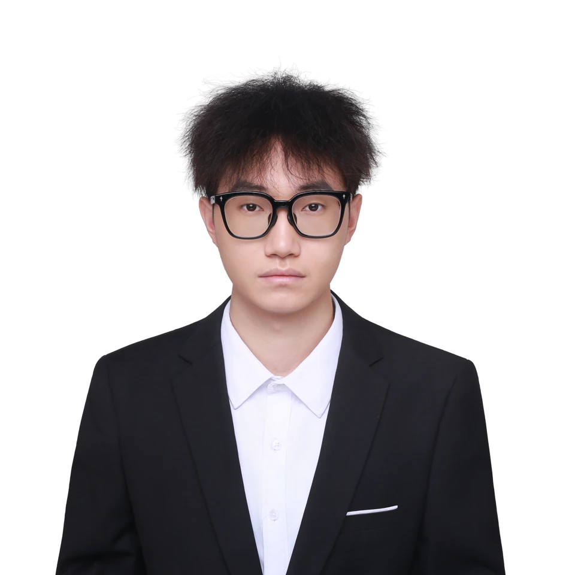
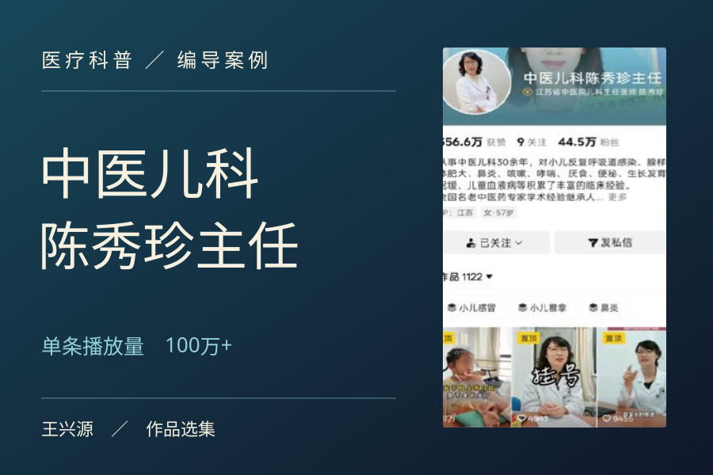
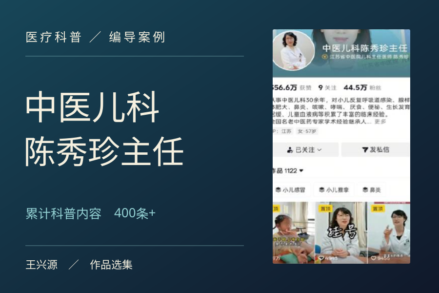
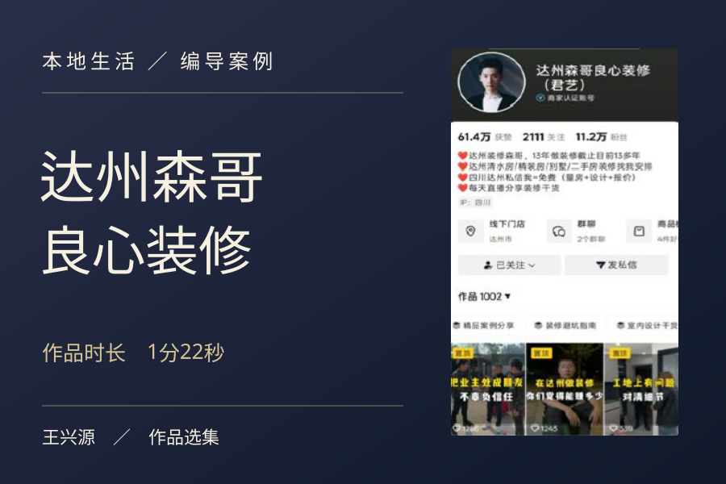

短视频编导
王兴源.
短视频编导 ／ IP 编导
- 单作品播放量
- 100万+
- 月最高涨粉
- 4000+
- 年最高涨粉
- 4.1万
从选题到成片，
把人物的故事讲给对的人。

个人经历.
从装修工地，到儿科诊室。
这两年，我为本地装修和中医儿科账号做编导。我的工作从一个具体的问题开始：业主现场要看什么，家长最想问医生什么？再把答案写成脚本，跟到拍摄、剪辑和发布。
- 2025.072026.09医疗科普 ／ IP 编导
江苏省中医院
负责「中医儿科陈秀珍主任」账号的定位与内容运营。围绕家长关心的儿科问题，14 个月产出 400 余条科普内容。
- 2024.062025.06本地生活 ／ 短视频编导
达州君艺装饰工程有限公司
为「达州森哥良心装修」做选题、分镜、拍摄指导和剪辑。通过工地实拍、装修答疑和业主口碑，累计产出 250 余条内容。
个人优势.
从人物身上找选题，
用作品的反馈决定下一次拍什么。
01个人品牌人物定位
先听出镜人平时怎么说话，再把他的专业经验、表达习惯和观众关心的问题连起来。
医疗科普从家长最想问的儿科问题开始，找到医生适合长期讲述的内容。

02内容制作现场编导
能独立完成选题、脚本、分镜和拍摄指导。剪辑时逐句检查，保留人物自己的表达。
装修现场为达州森哥做工地实拍、装修答疑和业主口碑内容，从脚本一直跟到成片。
03增长分析数据复盘
把完播率、互动和涨粉放在一起看，再用下一条视频检验开场、信息顺序和剪辑节奏。
运营记录在儿科科普账号运营中，结合后台反馈调整选题和口播结构。

04本地生活同城获客
把达州业主常搜的问题带到真实工地拍，让评论区里的装修疑问衔接私信和到店咨询。
案例回看达州装修案例采用正反对比脚本，作品播放量 23.4 万，线下引流 30 余人。

05创作流程人工智能辅助创作
将对标拆解、选题生产和文案质检整理成三套工作流程，为采访和现场判断留出更多时间。
我的工作流从同类作品里拆出表达方法，再根据人物和拍摄条件筛选选题，最后逐句检查文案。
作品选集.
左右滑动切换作品，点击封面放大播放。
将冰冷的视频
变温暖
Bringing warmth to every frame.
我喜欢拍一个人讲起自己最熟悉的事时，突然生动起来的那一刻。编导的工作，就是找到这样的瞬间，让屏幕另一端的人也愿意听下去。